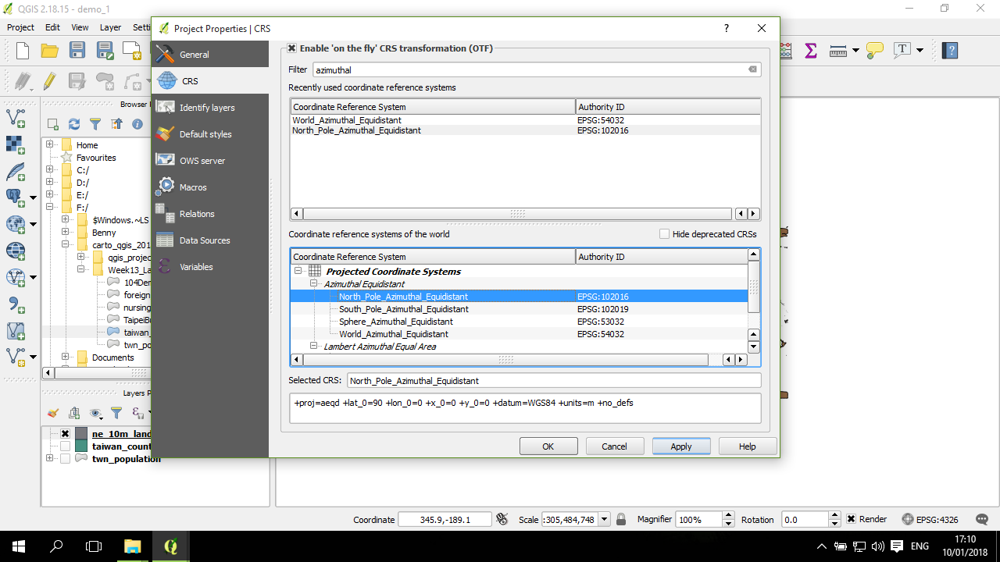

投影 (projection)
投影系統是 GIS 最關鍵的一個概念架構。
這邊簡單的說明一下，在操作上，投影資訊在GIS操作所需要注意的事項。基本上，在繪製一張地圖，有兩個座標系統需要確定與設定：
- 第一個是空間資料的座標系統。每一個空間資料集，都是在一個特定的座標系統下所記錄。以點資料為例，每一個點的座標值 (X,Y) 可能記錄的是經緯度(WGS84, EPSG:4326) ，或可能是經過投影的座標值，例如台灣常用的 TWD97(EPSG:3826) 等。
- 另一個是目前這張地圖要用哪一種投影進行繪製的投影系統。地圖的投影系統可以跟資料的座標系統的投影不同，例如，我們可能會有一個座標系統為 WGS84 經緯度的全球城市點資料，但我們可能會想畫一張以台灣為中心(控制點)的正方位等距投影 (Azimuthal Equidistant Projection)，呈現從台灣到每一個城市的距離。這時候 QGIS 地圖的投影系統可以設定成適當的投影系統，然後 QGIS 會自動將點的經緯度轉成地圖的座標系統值。
因此，在繪製一張地圖時，需要記得確認這兩件事，一是資料集本身的座標系統，二是準備要繪製的地圖的投影系統。以台灣常用的地圖來說，通常資料集的座標系統都已經轉換成常用的 TWD97，然後 QGIS 在匯入第一個檔案的時候自動用這第一個檔案的系統作為地圖的投影系統。但也要注意有時候所取得的資料集的座標系統可能是 WGS84 或是 TWD67。
確認資料集的座標系統
以下用全球陸地作為距離的圖層。
在左下角圖層列表中，對這圖層點右鍵選 properties，或點兩下：
打開圖層的屬性界面，選到第一個分頁 (General)，其中第二個大項是 Coordinate reference system (crs)，其中會顯示這個圖層的 crs，如果跟你所知道的不一樣，或是顯示為 undefined，則點其右方的按鈕，會出現這個頁面：
在這頁面的最上方，可以用關鍵字來找到你所需要找到的投影系統，例如 輸入4326 可以找到 WGS84 之類。選好適當的座標系統後，點 OK 確認。
設定地圖的投影系統
回到主畫面，從 QGIS 右下角的那顆小地球(其右方顯示目前的投影系統，以這個圖層為例，QGIS 自動選定了 EPSG:4326)。此外，出現的小標籤說明，現在的 OTF 是沒有啟動的。點下去：
會出現類似前面看到的視窗，這時候右邊的框框整個是呈淡灰色的，這是因為 OTF 沒有啟動。對其最上面的格子按一下點開 OTF：
點開後，頁面變得可以被點選。選好所要的投影系統後 (以下面的例子來說，是以北極為中心的正方位等距投影)，下面的欄位會出現相應的投影參數，點下方的套用 (Apply)及 OK：

然後，地圖的形狀就改變了。這張地圖是以北極為中心的正方位等距投影的樣子：